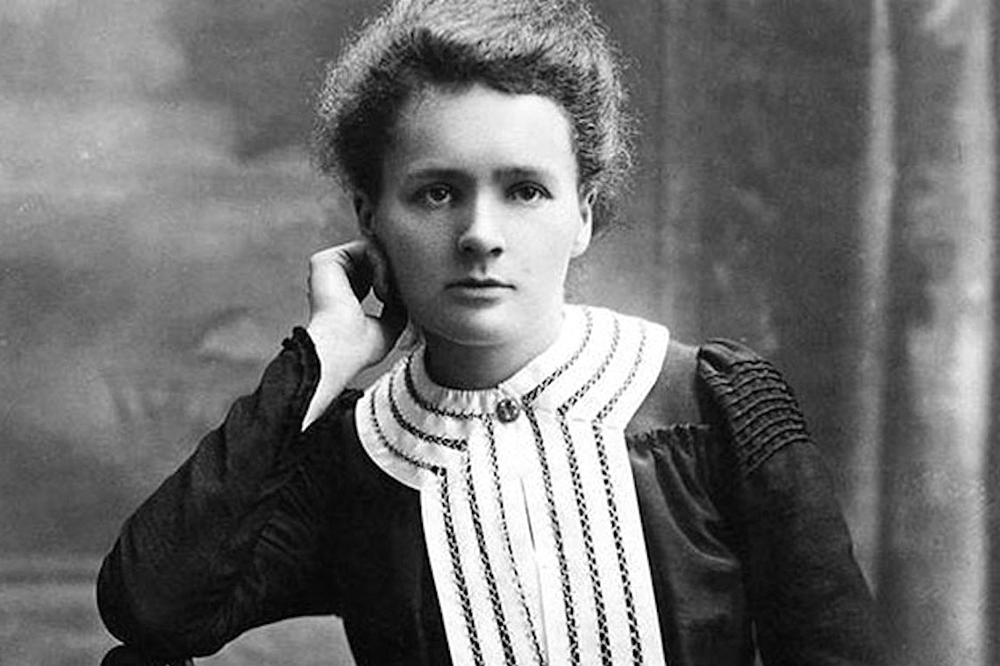
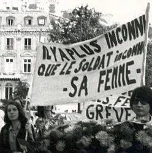
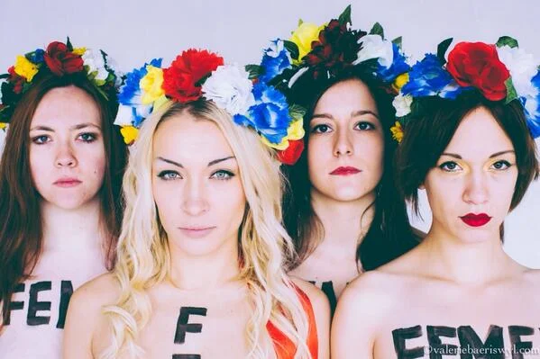
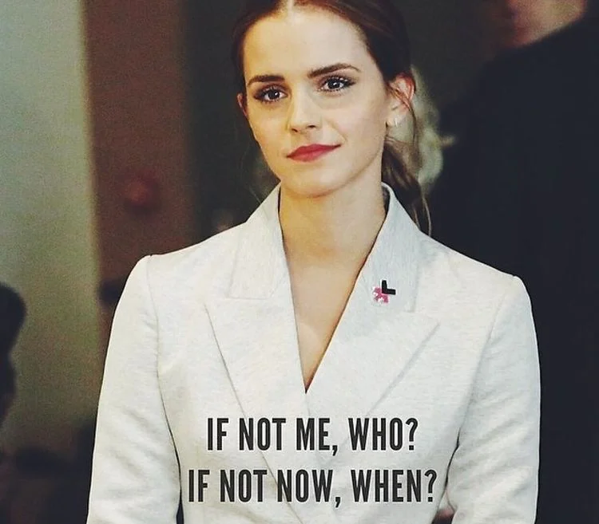
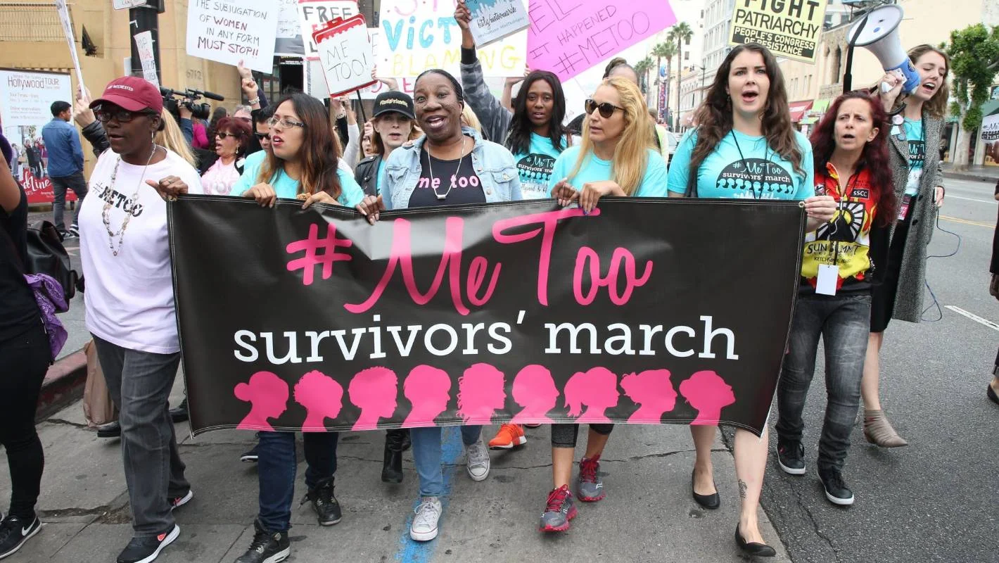
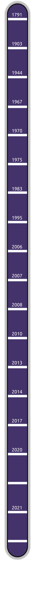

Le féminisme en France, de ses origines à nos jours
Voici une liste des moments-clés de l’histoire du féminisme en France :
- Née Marie Gouze, Olympe de Gouges est connue pour être l'une des précurseurs du féminisme français. Elle a notamment écrit de nombreux essais à propos des droits de la femme et de l'abolition de l'esclavage. Elle publia en 1791 la Déclaration des Droits de la Femme et de la Citoyenne. Il s'agit d'une œuvre basée sur le modèle de la Déclaration des Droits de l'Homme et du Citoyen de 1789. Cette dernière a pour objectif d'invoquer le fait que la femme est l'égal de l'homme ;
- Marie Curie, physicienne et chimiste franco-polonaise devient la première femme ayant reçu le prix Nobel de physique en 1903. La récompense lui est attribuée à la suite de ses travaux sur la radioactivité réalisés avec son mari Pierre Curie. Elle recevra le prix Nobel de chimie en 1911 à la suite de la découverte de deux nouveaux éléments : le radium et le polonium. Elle reste à ce jour la seule femme à avoir reçu 2 prix Nobel ; Portrait de Marie Curie
- Le 21 avril 1944, les femmes se voient accorder le droit de vote, qu'elles pourront utiliser aux élections municipales le 29 avril 1945 ;
- La loi Neuwirth est mise en application le 28 décembre 1967. Elle légalise la contraception pour les personnes de plus de 18 ans. Cependant, elle ne peut être remboursée par la Sécurité Sociale et sa publicité est prohibée ;
- Le 26 août 1970, dix femmes honorent "la femme du soldat inconnu", marquant la naissance du Mouvement de Libération des Femmes (MLF). Il intervient pour la protection des femmes, notamment dans la lutte contre les violences conjugales et le droit à l'avortement. C'est à travers cette manifestation que naît l'"Hymne des femmes", devenu l'emblème des luttes féministes francophones ; Manifestation du MLF lors du dépot de gerbe de fleurs sur la tombe du Soldat Inconnu
- Légalisation de l'avortement le 17 janvier 1975 autorisant l'interruption volontaire de grossesse (IVG). Cette loi, dite "loi Veil" à la suite du discours de Simone Veil à l'Assemblée Nationale le 26 novembre 1974 ;
- En 1983 est appliquée la loi sur l’égalité professionnelle, mise en place par Yvette Roudy (ministre déléguée aux Droits de la femme de 1981 à 1986). Votée le 3 novembre 1982, elle définit l'égalité professionnelle entre les femmes et les hommes, ce qui revient à définir le taux de parité en matière d'embauche et de rémunération en grande partie. Cette loi est applicable dans les entreprises de plus de 50 salariés ;
- En 1995 a lieu l'inauguration de l'Observatoire de la Parité entre les Femmes et les Hommes (OPFH). Il doit assurer une fonction d'expertise des politiques publiques pour favoriser une plus juste égalité entre femmes et hommes au niveau politique, économique et social. Le Haut Conseil à l'Egalité entre les femmes et les hommes (HCE) l'a remplacé en 2013 ;
- La loi n°2006-340 prononçant l’obligation de l'égalité des salaires entre les femmes et les hommes voit le jour le 23 mars 2006. Elle doit, en l'espace de cinq ans, supprimer les écarts de rémunération entre les femmes et les hommes. Elle doit également renforcer les droits au niveau du congé de maternité et faciliter l'accès à l'apprentissage pour les femmes ;
- La mise en place du 3919, un numéro de téléphone national, permet aux victimes et témoins de violences conjugales à partir du 14 mars 2007 de parler des actes qu'ils ont subis ou ont été témoins ;
- En 2008, le mouvement féministe "Femen" voit le jour en Ukraine grâce à Anna Hutsol entre autres. Ce mouvement a pour but de défendre les droits des femmes en menant des actions commandos, souvent en manifestant torse nu dans la rue. Le mouvement se propage rapidement en Europe, et atteint la France quelques semaines plus tard. Inna Shevchenko est la leader actuelle en France ; Photo de manifestantes du groupe Femen France
- Promulgation de la loi n°2010-769 à propos des violences faites aux femmes, au sein d'un couple et à l'incidence de ces dernières sur les enfants le 9 juillet 2010. Elle a pour but de renforcer la prévention et la répression de ces violences. Elle s'opère notamment par la mise en place d'ordonnances de protection des victimes et des délits de harcèlement au sein des couples ;
- En mars 2013, un décret établit le remboursement total de l’IVG et des contraceptifs médicaux pour les mineures de plus de 15 ans ;
- Le 20 septembre 2014, le discours d'Emma Watson retentit au siège des Nations Unies dans le cadre de la campagne "HeForShe". Elle insiste sur le besoin d'implication de tous pour parvenir à l'égalité des sexes ; Emma Watson après son discours aux Nations Unies en 2014
- En octobre 2017, les révélations sur le réalisateur hollywoodien Harvey Weinstein libèrent la parole des femmes. A la suite de cela, l’hashtag #BalanceTonPorc sur Twitter est lancé. Il provient de la journaliste Sandra Muller et encourage la dénonciation des abus sexuels subis au travail. Elle incite donc les femmes à témoigner sur les réseaux sociaux pour rompre les tabous de ce sujet. Les témoignages de victimes d'agressions et de harcèlement sexuels pleuvent (plus de 50 000 messages en un seul week-end) ;
- Pour répondre au mouvement #BalanceTonPorc, l'actrice Alyssa Milano déclenche quelques jours plus tard l’hashtag #MeToo. Il a pour but d'inciter les femmes victimes des mêmes abus à se manifester. Cela impacte tous les réseaux sociaux, notamment Twitter (lieu de départ du mouvement) et Facebook ; Manifestation suite au #MeToo lancé sur Twitter
- Le 15 mars 2020, la pilule contraceptive devient accessible à toutes les femmes directement en pharmacie. Il suffit de disposer d'une ancienne ordonnance et n'oblige pas de passer par un médecin pour en acquérir. En outre, la contraception d'urgence est disponible sans ordonnance, en pharmacie également ;
- La contraception devient gratuite pour les mineures de moins de 15 ans le 27 août 2020. Les frais de consultations et d'examens sont donc totalement pris en charge par la Sécurité Sociale, à l'instar des jeunes filles de 15 à 17 ans ;
- Le 16 janvier 2021, le mouvement #MeToo prend une autre tournure suite à l'affaire Duhamel. Le politologue aurait commis des faits d'inceste sur le frère de Camille Kouchner, autrice d'un livre dénonçant ces faits. Le #MeTooInceste est lancé majoritairement sur Twitter et Instagram, et met en évidence des milliers de témoignages ;
- Plus récemment, une loi visant à rendre les protections périodiques gratuites pour les étudiantes a été votée en février 2021. Depuis la rentrée scolaire 2021, elles sont disponibles dans les CROUS et services de santé universitaires.
Pour illustrer cette liste, voici une frise chronologique récapitulative :
1791 : Publication de la Déclaration des Droits de la Femme et de la Citoyenne d'Olympe de Gouges.
1903 : Marie Curie devient la première femme à recevoir un prix Nobel de physique. Elle recevra d'ailleurs le prix Nobel de Chimie en 1911.
21 avril 1944 : Le droit de vote est accordé aux femmes.
28 décembre 1967 : La loi Neuwirth est mise en application, légalisant la contraception pour les femmes majeures.
26 août 1970 : Naissance du MLF à la suite de la commémoration de "la femme du soldat inconnu".
17 janvier 1975 : Légalisation de l'avortement, notamment grâce à Simone Veil.
1983 : Application de la loi sur l'égalité professionnelle visant à définir le taux de parité d'embauche et de rémunération.
1995 : Inauguration de l'OPFH
23 mars 2006 : La loi prononçant l'obligation de l'égalité des salaires entre femmes et hommes est votée.
14 mars 2007 : Mise en place du 3919, numéro national pour les victimes et témoins de violences conjugales.
2008 : Naissance du mouvement féministe "Femen" en Ukraine. Le mouvement se propage rapidement en Europe et arrive en France en quelques semaines.
9 juillet 2010 : Promulgation de la loi visant à renforcer la prévention et la répression des violences faites aux femmes, des violences conjugales et à leur incidence sur les enfants.
Mars 2013 : Établissement du remboursement total de l'IVG et des contraceptifs pour les jeunes filles de 15 à 17 ans.
20 septembre 2014 : Discours d'Emma Watson aux Nations Unies pour la campagne HeForShe.
Octobre 2017 : le #BalanceTonPorc est lancé sur Twitter suite aux révélations sur l'affaire Weinstein. Quelques jours plus tard, le #MeToo fait son apparition et déclenche une vague gigantesque de témoignages de victimes d'abus sexuels.
15 mars 2020 : La pilule contraceptive devient accessible à toutes les femmes directement en pharmacie, sous réserve d'une ordonnance en ayant prescrit par le passé. La contraception d'urgence est en revanche disponible sans ordonnance.
27 août 2020 : La contraception devient gratuite pour toutes les jeunes filles mineures. Les frais de consultations et d'examens sont par ailleurs totalement pris en charge par la Sécurité Sociale.
16 janvier 2021 : Le #MeToo est détourné en #MeTooInceste à la suite de l'affaire Duhamel. Des milliers de témoignages de victimes sont mis en évidence encore une fois.
Février 2021 : La loi visant à rendre les protections périodiques gratuites pour les étudiantes est votée. Elle est appliquée à partir de la rentrée scolaire 2021.